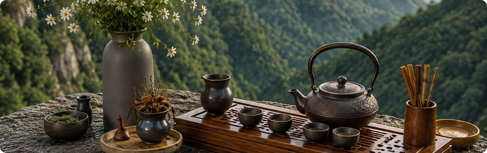
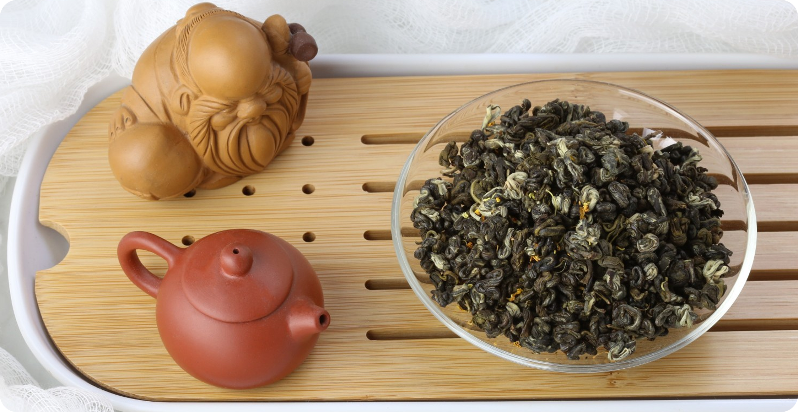
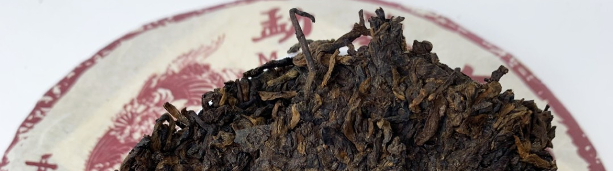

Почему Кудин пьют во время простуды и как избежать горечи при заваривании напитка?
20 ноября 2025

Эксперт в китайском чае

Если в России чаепитие — социальный ритуал, то в Китае — целый мир со своими обычаями, законами и правилами заваривания. Наибольшей популярностью пользуются два вида церемонии — величественная Гун Фу Ча и простая, но уютная Пинь Ча.
Атрибуты церемонии

Эталон красивой церемонии — Гун Фу Ча. Дословно название переводится как «высшее мастерство», и в нем отображена вся суть ритуала. Гун Фу Ча — не просто метод заваривания, а настоящее преставление, где у каждого движения и каждого предмета есть свой смысл.

Эксперт в церемониальном чае
«Многие мастера дополняют набор чайной фигуркой, а еще в современном чайном мире к этим инструментам добавился обязательный термос: он значительно упрощает процесс сохранения нужной температуры воды».
Как всё происходит
С помощью лопатки мастер кладёт в чахэ сухой чайный лист и пускает этот сосуд (или коробочку) по кругу, чтобы все участники церемонии могли познакомиться с чаем и вдохнув его аромат. Затем чай насыпают в чайник и заваривают небольшим количеством воды. Первый пролив очень короткий — всего пара секунд. Он нужен, чтобы оживить и промыть лист.

Если Гун Фу Ча — это парадный выход в свет, то Пинь Ча — искренняя беседа с хорошим другом за кухонным столом. Все тот же традиционный метод пролива, но уже без сложных действий и инструментов.
Пинь Ча: простота и искренность повседневного чая
Для Пинь Ча нужен минимум приборов: чайник или гайвань, термос и пиала. Если участников церемонии больше, чем один, к этому набору добавляется чахай. Все остальные предметы, включая массивную доску-чабань, необязательны, так что этот метод отлично подходит для офиса или уютного домашнего вечера. Чай сразу кладут в заварочный чайник и заливают горячей водой из термоса. Первый настой, как обычно, сливают, а затем процесс заваривания повторяется столько раз, сколько позволяет чайный лист. Готовый настой либо сразу выливается в пиалу (одиночное чаепитие), либо перед этим проходит через чахай. При желании количество атрибутов для приготовления чая можно и увеличить, но в любом случае этот вид церемонии намного проще, чем Гун Фу Ча. И при этом Пинь Ча также позволяет в полной мере уловить игру вкуса, который меняется от пролива к проливу.